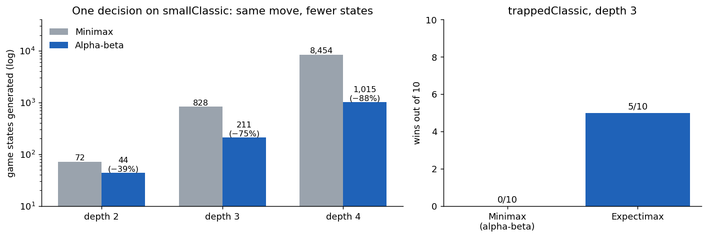

← Back to CS 188 Projects
Outthinking
CS 188 | Project 2 | Summer 2026
Outthinking
the Ghosts.
Adversarial search for Pacman against one or more ghosts: a reflex agent, depth-limited minimax, alpha-beta pruning and expectimax, plus a hand-designed evaluation function. Alpha-beta picks the same move as minimax while generating 88% fewer game states.
Headline10/10 wins with my evaluation function · alpha-beta prunes 88% of states at depth 4 · expectimax wins where minimax always loses
- Course
- CS 188, Introduction to Artificial Intelligence
- Project
- Project 2: Multi-Agent Search
- Timeline
- Summer 2026, UC Berkeley
- Topics
- Minimax, alpha-beta, expectimax, evaluation functions
25/25autograder score
10/10games won with my evaluation function (avg score 1,239)
−88%game states generated by alpha-beta vs. minimax at depth 4
5 vs 0wins out of 10 for expectimax vs. minimax in the trap layout
Overview
Pacman now shares the board with ghosts that move after him every turn. Planning means looking ahead through alternating moves by Pacman and every ghost, which grows exponentially with depth. The project builds agents that search this game tree, prune it, reason about random opponents, and score positions that are too deep to search.
Approach
- Reflex agent. Scores each immediate successor using food distance and ghost proximity, then takes the best move with no lookahead.
- Minimax with many ghosts. A depth-limited game tree where Pacman maximizes and each ghost gets its own minimizing layer, so one depth level is one move by every agent.
- Alpha-beta pruning. Tracks the best value each side is already guaranteed and skips branches that cannot change the decision. It returns exactly the minimax move.
- Expectimax. Real ghosts here move randomly, so ghost layers average over their moves instead of assuming the worst case.
- Better evaluation function. A weighted score for non-terminal states: game score, closeness to the nearest food, a penalty per remaining dot, a large penalty for standing next to an active ghost, and a bonus for chasing scared ghosts.
Pacman (max): V(s) = maxa V(succ(s, a)) Ghost (min): V(s) = mina V(succ(s, a))
Expectimax ghost: V(s) = Σa P(a | s) · V(succ(s, a)) Alpha-beta: prune once α > β
Expectimax ghost: V(s) = Σa P(a | s) · V(succ(s, a)) Alpha-beta: prune once α > β
α is the best value guaranteed for Pacman along the current path, β the best for the ghosts. At the depth limit, V(s) comes from the evaluation function.
Results
| Test | Result |
|---|---|
| Reflex agent (10 games) | 10/10 wins, average score 1,287 |
| Better evaluation function, small classic board (10 games) | 10/10 wins, average score 1,239 |
| One decision at depth 4: minimax vs. alpha-beta | 8,454 → 1,015 states generated, same move |
| Trapped layout, depth 3 (10 games) | Minimax 0/10 wins · Expectimax 5/10 wins |

What I learned
- Pruning is free accuracy. Alpha-beta never changes the answer, and its savings grow with depth: 39% at depth 2, 88% at depth 4.
- Model the opponent you actually face. Assuming a perfect adversary made Pacman too pessimistic against random ghosts. Averaging instead of minimizing turned a guaranteed loss into a 50% win rate.
- Evaluation functions carry the intelligence. With shallow search, most of the play quality came from which features I scored and how I weighted them.
- Search cost explodes with agents. Each extra ghost adds a full layer per depth level, which is why pruning and good evaluation matter so much.
Project framework and specifications are from the CS 188 course staff (the Berkeley Pacman AI projects). The implementation and write-up are my own; the code is kept private in line with course academic-integrity policy. Results come from re-running my finished code.